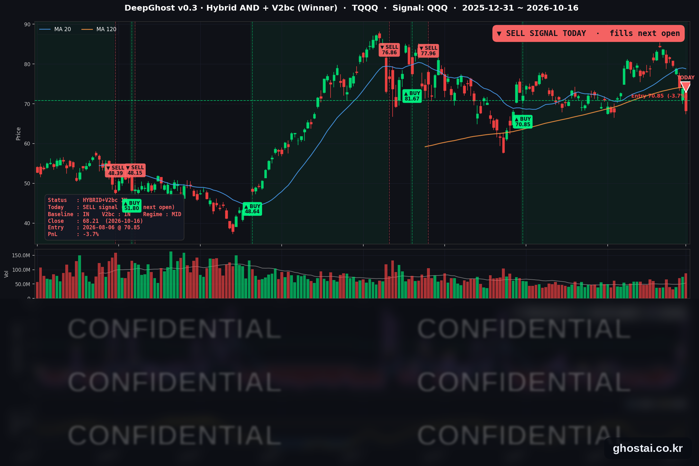

AI 불신, TQQQ 매도 신호
· Ghost.AI 데일리 리포트
👻 매일 시그널과 히스토리를 홈페이지에서 한눈에 → www.ghostai.co.kr
회원 페이지 안내 — 회원 가입하시면 커버리지 전 종목의 원본 시그널과 분석 레포트를 매일 확인하실 수 있습니다. 회원 페이지는 블로그·유튜브보다 먼저 업데이트됩니다. 선착순 100명을 모집하고 있으며, 이메일과 필명만으로 가입하실 수 있고 서비스 사용료는 받지 않습니다. 가입 신청 후 운영자 승인을 거쳐 이용하실 수 있습니다.
메모리 공급 우려와 AI 데이터센터 업체의 부채 우려가 겹쳐 반도체·소프트웨어 종목이 크게 내렸고, 나스닥 종합은 2.15%, 나스닥 100(QQQ)은 2.50% 내렸습니다. 반면 S&P 500 구성종목 493개 중 247개는 올랐고 에너지·유틸리티·필수소비재가 강했습니다. 하락이 기술주에 몰린 하루였습니다. TQQQ는 7.60% 내린 68.21달러로 마감했고, 전략에 매도 신호가 나왔습니다. 전략은 다음 거래일인 10월 19일(월) 미국 장 시가에 TQQQ를 전량 매도합니다.
📊 오늘의 매매 신호
| 항목 | 내용 |
|---|---|
| 오늘의 신호 | 🔴 전략 매도 신호 발생 — 전략은 다음 거래일(10월 19일 월) 미국 장 시가에 TQQQ 를 전량 매도합니다 (한국시간 10월 19일 오후 10:30) |
| 포지션 상태 | 매도 신호 발생 (체결 전) |
| 보유 기간 | 2026-08-06 ~ 2026-10-16 (51거래일) |
| 진입가 → 금요일 종가 | $70.85 → $68.21 |
| 이번 거래 전략 수익률 | 종가 기준 -3.73% (최종 수익률은 월요일 시가로 정해집니다) |
TQQQ 시그널 — IN POSITION (매도 신호 발생)
현재 상태: 매도 신호 발생, 10월 19일(월) 시가 매도 예정 | 종가 기준 -3.73%

TQQQ는 -7.60% 내린 68.21달러로 마감했습니다. 종가 기준으로 6월 23일 이후 가장 큰 하루 하락이고, 5거래일 연속 내려 9월 16일 이후 가장 낮은 종가입니다. 전략의 평가수익률은 전 거래일 +4.19%에서 -3.73%로 바뀌었습니다.
전 거래일 다시 늘었던 매도 신호까지의 여유는 나스닥 100이 2.50% 내리면서 없어졌고, 오늘 장 마감 기준으로 매도 신호가 나왔습니다. 전략은 8월 6일 시가 70.85달러에 매수한 TQQQ를 10월 19일(월) 미국 장 시가에 매도합니다. 금요일 종가는 진입가보다 3.73% 낮지만, 이번 거래의 최종 수익률은 월요일 시가로 정해집니다.
이번 보유 기간 중 평가수익률이 가장 높았던 날은 10월 6일(+18.91%)입니다. 그 뒤 8거래일 동안 반도체 약세가 이어지면서 수익을 모두 반납했습니다. 매도가 끝나면 전략은 다시 매수 신호가 나올 때까지 현금으로 보유합니다.
오늘 미국 시장 — 시황 요약
지수 마감
| 지수 | 종가 | 등락률 | 주간 (10/9 대비) |
|---|---|---|---|
| S&P 500 | 7,659.44 | -1.09% | -1.95% |
| 나스닥 종합 | 26,140.03 | -2.15% | -4.48% |
| 다우존스 | 52,002.41 | -0.34% | +0.67% |
| 러셀 2000 (IWM) | 270.44 | -1.69% | -3.05% |
| QQQ (나스닥100) | 709.80 | -2.50% | -5.52% |
| TQQQ | 68.21 | -7.60% | -16.08% |
| 반도체 ETF (SOXX) | 493.39 | -4.14% | -11.80% |
나스닥 종합의 하루 하락폭은 7월 23일 이후, QQQ는 6월 23일 이후 가장 컸습니다. 나스닥 종합은 이번 주 4.48% 내려 보도 기준 6월 이후 가장 큰 주간 하락을 기록했습니다. 반도체 ETF SOXX는 10월 6일부터 9거래일 연속 내렸고, SOXX 종가 기준 9거래일 연속 하락은 2006년 5월 이후 처음입니다. 이번 주 주요 지수 중 오른 것은 다우뿐이고, 오늘 사상 최고 종가를 낸 지수는 없습니다.
국채 금리 동향
| 만기 | 10/15 종가 | 10/16 종가 | 전일 대비 | 주간 |
|---|---|---|---|---|
| 3개월 | 4.088% | 4.070% | -1.8bp | +1.3bp |
| 5년 | 4.899% | 4.899% | 0.0bp | -12.2bp |
| 10년 | 5.089% | 5.098% | +0.9bp | -14.6bp |
| 30년 | 5.429% | 5.436% | +0.7bp | -16.4bp |
주가가 크게 내린 날에도 국채 금리는 1bp 안쪽에서 움직였습니다. 전 거래일에는 10년물이 10.1bp 내렸지만, 오늘은 거의 움직이지 않았습니다. 재무부 자료 기준 2년물은 4.77%에서 4.74%로 3bp 내렸습니다. 10년물과 3개월물의 차이는 102.8bp로, 커브는 역전 없는 우상향입니다. 이번 주 전체로는 단기 금리는 그대로이고 5년 이상 장기 금리만 12~16bp 내렸습니다.
연준 발언 & 금리 패스
- 워시(Warsh) 연준 의장 — IMF 게오르기에바 총재와 대담 (10/15 23:30 ET): "회의 결과를 미리 판단하지 않는다"며 10월 27~28일 회의에 대한 신호를 주지 않았습니다. 물가 안정을 달성하겠다는 입장을 다시 밝혔고, AI 투자가 생산 능력을 늘리겠지만 지금은 물가를 올리고 있으며 앞으로의 경로는 "매우 울퉁불퉁할 것"이라고 말했습니다.
- 시장 해석은 중립입니다. 발언 뒤 10월 인상 확률은 전 거래일 30% 안팎에서 15~17% 안팎으로 내렸습니다. 골드만삭스는 10월 동결 뒤 12월 인상을 예상했습니다.
- 정책금리는 3.75~4.00%이고, 10월 17일(토)부터 FOMC 전 발언 금지 기간이 시작됩니다. 이 대담이 회의 전 마지막 공개 발언입니다.
오늘의 핵심 이슈
- 반도체·AI 관련 종목이 크게 내렸습니다. 중국 창신메모리(CXMT)가 발표한 신형 DRAM 구조가 메모리 공급 부족을 줄일 수 있다는 우려에 메모리 종목이 이번 주 내내 내렸고, AI 데이터센터 임대 업체 코어위브는 부채 우려로 11.91% 내렸습니다. 필라델피아 반도체지수는 30종목이 모두 내려 3.83% 하락했고, 소프트웨어 종목도 함께 내렸습니다.
- 지수는 내렸지만 구성종목 절반은 올랐습니다. S&P 500 구성종목 등락률 중간값은 +0.01%였습니다. 에너지는 21종목이 모두 올랐고 정보기술은 71종목 중 7개만 올랐습니다. 이번 주 구성종목 중간값은 +2.67%인데 지수는 1.95% 내렸고, 두 값의 차이는 현재 구성종목 기준으로 계산하면 2010년 이후 가장 컸습니다.
- 물가 지표와 유가가 함께 올랐습니다. 9월 수입물가는 전월 대비 1.1%, 전년 대비 8.1% 올라 2022년 7월 이후 가장 높은 연간 상승률을 기록했습니다. 이란이 호르무즈 해협에서 유조선 공격을 늘렸다는 보도에 브렌트유는 3.56% 올랐습니다.
변동성 & 투자심리
VIX는 16.46에서 19.99로 21.45% 올랐습니다. 종가 기준 7월 29일 이후 가장 높고, 하루 상승률은 6월 5일 이후 가장 컸습니다. CNN 공포탐욕지수는 전일 31.5에서 17.9로 내려 "극단적 공포" 구간에 들어갔습니다(1주 전 46.5). 4월 1일 이후 가장 낮은 값이며, 구성 지표 7개 중 6개가 "극단적 공포"입니다. 하락은 기술주에 몰렸지만 투자심리는 한 주 사이 크게 나빠졌습니다.
매크로 & 원자재
| 품목 | 종가 | 등락률 |
|---|---|---|
| WTI 선물 | $99.04 | +1.09% |
| 브렌트유 선물 | $109.69 | +3.56% |
| 원유 ETF (USO) | $161.76 | +2.83% |
| 금 ETF (GLD) | $382.01 | -0.18% |
- 유가: 브렌트유는 5월 19일 이후 가장 높은 종가로 마감했고, USO는 7거래일 연속 올랐습니다. 우크라이나도 러시아 정유시설 공격을 재개했다고 밝혔습니다.
- 금: 위험 회피 심리가 커진 날에도 GLD는 거의 움직이지 않았습니다.
- 경제 지표: 9월 산업생산은 전월 대비 0.7% 늘었고, 증가분 대부분은 유틸리티(+3.5%)에서 나왔습니다.
주요 종목 동향
| 종목 | 종가 | 등락률 | 비고 |
|---|---|---|---|
| AAPL | 343.46 | +0.43% | 사상 최고 종가, 새 아이폰 초기 공급 부족 보도 |
| NVDA | 214.13 | -1.43% | 3거래일 연속 하락, 9/16 이후 최저 종가 |
| AMZN | 250.00 | -1.87% | 10/1 이후 최저 종가 |
| MSFT | 529.05 | -1.93% | 소프트웨어 동반 하락 |
| TSLA | 354.72 | -2.13% | 5거래일 연속 하락, 로드스터 공개 후 장 전 상승분 반납 |
| GOOGL | 340.59 | -2.47% | 10/1 이후 최저 종가 |
| NFLX | 70.53 | -2.86% | 10/20 3분기 실적 |
| QCOM | 172.11 | -3.53% | 9/4 이후 최저 종가 |
| META | 709.33 | -3.72% | 3거래일 연속 하락, 10/21 3분기 실적 |
| AVGO | 328.75 | -4.52% | 4/6 이후 최저 종가 |
| MU | 878.84 | -5.63% | 8/11 이후 최저 종가, 중국 메모리 업체 기술 발표 우려 |
| INTC | 89.85 | -5.79% | 커버리지 최대 하락, 9/1 이후 최저 종가 |
커버리지 12종목 중 11종목이 내렸고 애플만 올랐습니다. 반도체 5종목(MU·INTC·AVGO·QCOM·NVDA)이 모두 내렸고, 마이크론과 인텔은 이번 주 14% 넘게 내렸습니다.
다음 일정 (미 동부시간)
- 10/19(월) 정상 거래일
- 10/20(화) 장 시작 전 GM·RTX·노스롭그루먼 / 장 마감 후 넷플릭스 3분기 실적
- 10/21(수) 장 마감 후 메타·테슬라·텍사스인스트루먼트·IBM·램리서치 3분기 실적
- 10/22(목) 장 시작 전 P&G·록히드마틴 / 장 마감 후 웨스턴디지털
- 10/27~28 FOMC (28일 14:00 결정)
- 10/29(목) 9월 PCE·3분기 GDP 속보치, 인텔 실적
다음 거래일 체크포인트 (10/19)
- TQQQ 전략 매도 — 월요일 미국 장 시가에 매도되며, 이 시가로 8월 6일 매수분의 최종 수익률이 정해집니다.
- 반도체 10거래일째 하락 여부 — SOXX가 반등하는지가 반도체 비중이 큰 나스닥 100의 방향에 영향을 줍니다.
- 브렌트유 110달러, VIX 20 — 유가가 110달러 위에 머무는지, VIX가 20 위에서 마감하는지 확인합니다.
Ghost.AI — Quantitative AI Investment
Model: DeepGhost v0.3 | Transformer-Based Deep Learning
Coverage: 14 tickers | Updated every trading day after US market close
⚠️ 본 자료는 정보 제공 목적으로만 작성되었으며 투자 권유가 아닙니다. 모든 투자의 책임은 투자자 본인에게 있습니다. 과거 성과가 미래 수익을 보장하지 않습니다.
[유의사항]
- 본 서비스는 불특정 다수를 대상으로 발행되는 단방향 정보 제공 서비스이며, 투자자 개인의 재산 상황·투자 목적·위험 선호도를 반영한 개별 투자 조언이 아닙니다.
- 고스트에이아이 주식회사는 고객과 쌍방향 의사소통(개별 상담, 맞춤형 자문 등)을 제공하지 않습니다.
- 본 콘텐츠는 투자 권유 또는 매매 주문의 청약·청약의 권유에 해당하지 않으며, 최종 투자 판단 및 그에 따른 손익의 책임은 전적으로 투자자 본인에게 있습니다.
고스트에이아이 주식회사